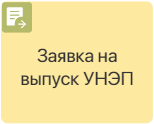
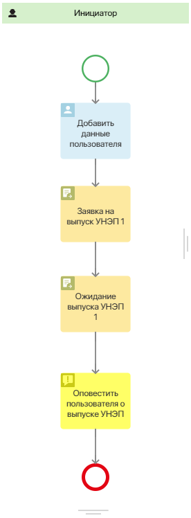
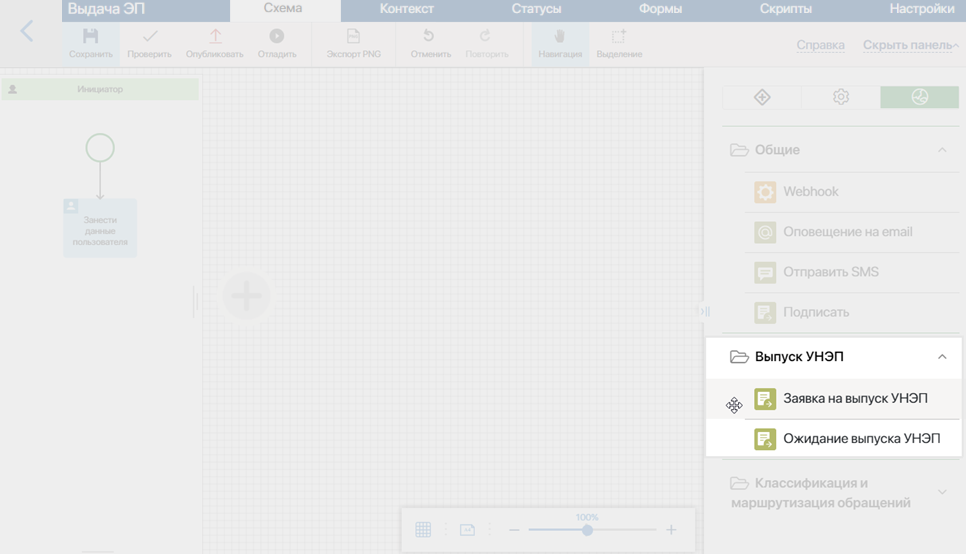
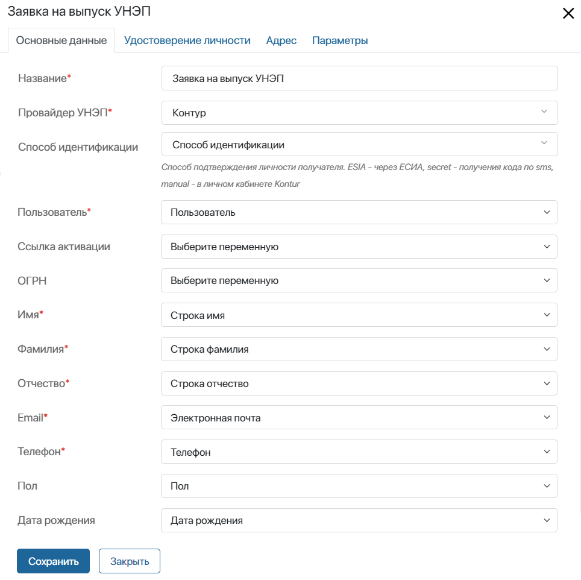
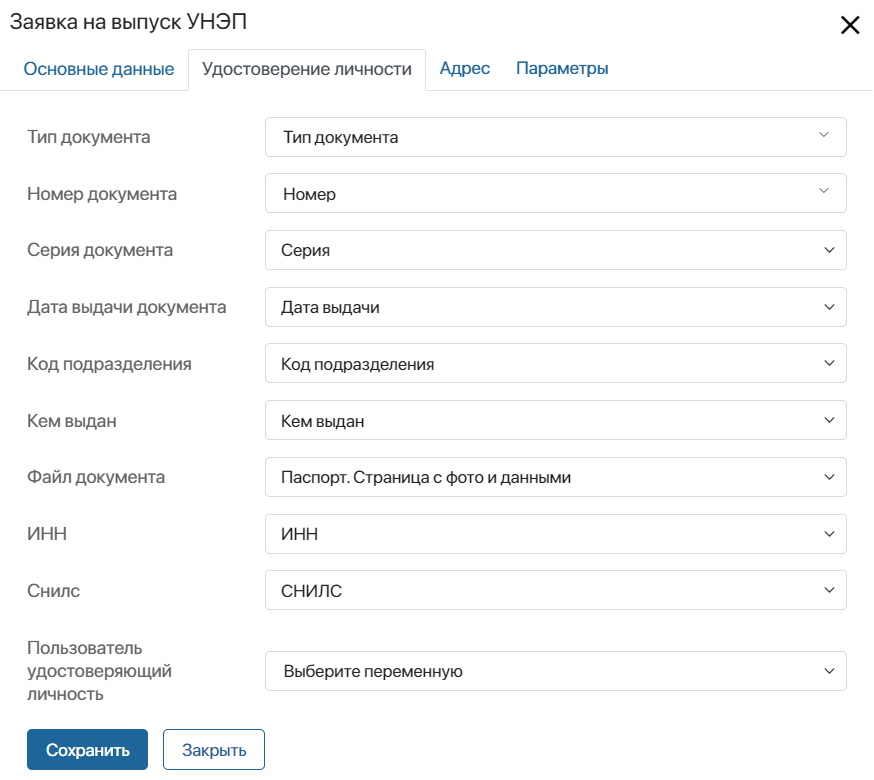
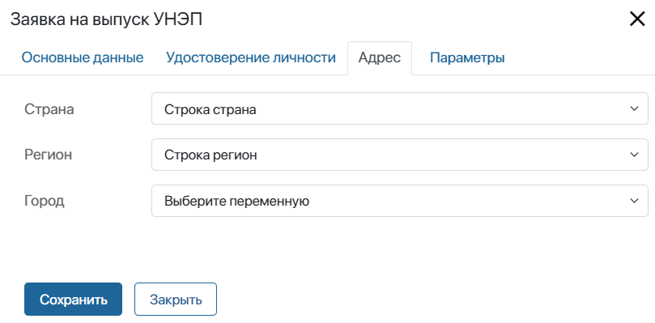
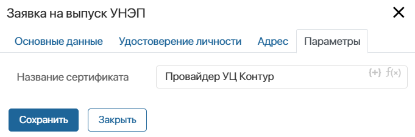

Графический элемент позволяет в ходе процесса предоставлять облачные сертификаты усиленной неквалифицированной электронной подписи (УНЭП) и простой электронной подписи (ПЭП) внутренним и внешним пользователям, добавленным в ELMA365. Вы можете использовать этот блок в дизайнере бизнес-процессов только в том случае, если настроили модуль подключения электронной подписи, например, Sign.Me.
Графический элемент необходимо использовать совместно с блоком Ожидание выпуска УНЭП и размещать на схеме процесса перед ним.
Например, можно создать процесс, в ходе которого удалённому сотруднику выдаётся УНЭП для подписания внутренних документов. При запуске процесса сотрудник получает задачу ввести персональные данные. Когда процесс доходит до блока Заявка на выпуск УНЭП, в удостоверяющий центр направляется запрос на выдачу сертификата электронной подписи. Далее на время обработки данных пользователя на стороне сервиса процесс останавливается на блоке Ожидание выпуска УНЭП. Когда выдача сертификата завершается, процесс продолжается, и сотрудник получает уведомление о выпуске электронной подписи. После этого он может использовать её для подписания внутренних документов в ELMA365.
Предварительные настройки процесса
Чтобы использовать блок Заявка на выпуск УНЭП, в него необходимо передать данные о пользователе, запрашивающем сертификат электронной подписи. Это осуществляется с помощью сопоставления полей в настройках графического элемента с контекстными переменными процесса.
Перед началом настройки блока необходимо выполнить следующие действия:
- В дизайнере бизнес-процессов перейдите на вкладку Контекст и создайте свойства, в которых будут храниться личные данные пользователя, необходимые для предоставления сертификата. Вы можете задать для них пользовательские названия и коды. Список необходимых свойств с их типами:
Свойство |
Тип данных |
Особенности заполнения |
Способ идентификации |
Строка (Строка) |
Используется только для провайдера УЦ Контур. В свойство записывается метод подтверждения личности пользователя в виде строкового значения:
Если в переменную записано иное значение или она оставлена пустой, используется вариант, выбранный в настройках модуля интеграции. |
Пользователь |
Пользователи (Один) |
— |
Ссылка активации |
Строка (Строка) |
— |
ОГРН |
Строка (Строка) |
— |
Имя |
Строка (Строка) |
— |
Фамилия |
Строка (Строка) |
— |
Отчество |
Строка (Строка) |
— |
Электронная почта (Несколько) |
— |
|
Телефон |
Номер телефона (Несколько) |
— |
Пол |
Строка (Строка) |
— |
Дата рождения |
Дата/Время (Дата) |
— |
Тип документа |
Строка (Строка) |
Используется только для провайдера УЦ Контур. В свойство записывается тип документа в виде строкового значения:
Если поле заполнено некорректно или оставлено пустым, по умолчанию используется паспорт гражданина РФ. |
Номер документа |
Строка (Строка) |
Заполняется без пробелов и дефисов. |
Серия документа |
Строка (Строка) |
Заполняется без пробелов и дефисов. |
Дата выдачи документа |
Дата/Время (Дата) |
— |
Код подразделения |
Строка (Строка) |
Указывается через дефис. |
Кем выдан |
Строка (Текст) |
— |
Файл документа |
Файлы (Несколько) |
— |
ИНН |
Строка (Строка) |
Заполняется без пробелов и дефисов. |
СНИЛС |
Строка (Строка) |
Заполняется без пробелов и дефисов. |
Страна |
Строка (Строка) |
Формат должен соответствовать требованиям провайдера, выдающего УНЭП. Например, для сервиса Sign.Me страна Россия указывается как RU. |
Регион |
Строка (Текст) |
Формат должен соответствовать требованиям провайдера, выдающего УНЭП. Например, для сервиса Sign.Me такие определения, как «республика», «область» прописываются на втором месте: Удмуртская Республика. |
Город |
Строка (Строка) |
Формат должен соответствовать требованиям провайдера, выдающего УНЭП. Например, для сервиса Sign.Me такие определения, как «город» прописываются на втором месте: Москва Город. |
- Разместите на схеме процесса графический элемент, с помощью которого значения переменных будут передаваться в блок Заявка на выпуск УНЭП. Это может быть блок Задача или Скрипт. В первом случае сотрудник будет заполнять данные о пользователе на форме задачи вручную. Во втором — значения переменных будут передаваться при исполнении кода, составленного на языке TypeScript.
Таким образом, схема процесса выдачи сертификата УНЭП с использованием блока Задача может выглядеть так:

Настройка блока
На странице процесса на правой панели инструментов перейдите на вкладку Интеграции. Перетащите блок Заявка на выпуск УНЭП на схему и разместите его там, где потребуется отправлять запрос на выдачу сертификата электронной подписи.

Дважды нажмите на добавленный блок на схеме процесса. Затем заполните поля настроек на четырёх вкладках: Основные данные, Удостоверение личности, Адрес и Параметры.
Вкладка «Основные данные»

- Название* — введите название блока, которое будет отображаться на схеме процесса;
- Провайдер УНЭП* — укажите сервис выпуска облачных сертификатов, с которым у вас настроена интеграция: Sign.Me, УЦ Контур или ПЭП;
- Способ идентификации — поле отображается, если в качестве провайдера указан УЦ Контур. Выберите переменную типа Строка, в которой хранится способ подтверждения личности пользователя. Выполнять подтверждение личности может либо сам пользователь через Портал Госуслуг или личный кабинет УЦ Контур, либо уполномоченный сотрудник через корпоративный аккаунт УЦ Контур;
- Ссылка активации — поле сопоставляется с переменной, хранящей ссылку на сервис, на стороне которого пользователь завершает регистрацию и подтверждает выдачу сертификата. Для провайдеров ПЭП и Sign.Me поле можно оставить пустым, так как подтверждение выпуска сертификата не требуется. Для УЦ Контур поле также можно не заполнять, так как сертификат выпускается сразу после подтверждения личности пользователя;
- ОГРН — укажите переменную, которая хранит ОГРН вашей компании, выданный при регистрации на стороне провайдера Sign.Me. Оставьте поле пустым, если вы настраиваете выдачу УНЭП с помощью УЦ Контур;
- Пользователь*, Имя*, Фамилия*, Отчество*, Email*, Телефон*, Пол, Дата рождения — сопоставьте поля с контекстными переменными процесса соответствующих типов, которые хранят информацию о внутреннем или внешнем пользователе, запрашивающем сертификат УНЭП.
Вкладка «Удостоверение личности»
На этой вкладке укажите информацию о документе, удостоверяющем личность получателя сертификата. Если в качестве провайдера выбран УЦ Контур, вы можете указать переменную, в которой хранится тип документа — паспорт гражданина РФ или иной документ. Для других провайдеров используется только российский паспорт.
Сопоставьте поля с переменными, в которых хранятся данные документа, файл его скан‑копии, а также ИНН и СНИЛС.
Поле Пользователь удостоверяющий личность заполнять не нужно. Оно является служебным и используется для взаимодействия с провайдером сертификата электронной подписи через API.

Вкладка «Адрес»
Здесь выберите переменные, которые хранят данные о месте регистрации пользователя по паспорту: страну, регион и город.

Вкладка «Параметры»
На этой вкладке задайте шаблон, по которому будет формироваться название сертификата в процессе его выпуска. Сотрудник увидит это название при выборе сертификата во время подписания документа или элемента приложения.
Чтобы в названии сертификата использовать контекстные переменные, нажмите значок {+}. Для добавления в шаблон условия или функции, нажмите значок f(x).

После заполнения всех полей сохраните настройки.
Далее на схеме процесса необходимо разместить блок Ожидание выпуска УНЭП и настроить его.
Обратите внимание, если электронная подпись выпускается через сервис УЦ Контур, регистрацию сертификата нужно завершить на Портале Госуслуг, с помощью кода из SMS или в личном кабинете провайдера. Поэтому в ходе процесса необходимо предусмотреть оповещение пользователя о необходимости подтверждения выпуска УНЭП. Это можно сделать с помощью блока Оповещение или Задача. При этом разместить блок необходимо между графическими элементами Заявка на выпуск УНЭП и Ожидание выпуска УНЭП.
По завершении процесса внутренний или внешний пользователь сможет подписывать документы или элементы приложений индивидуальной неквалифицированной электронной подписью или простой электронной подписью.